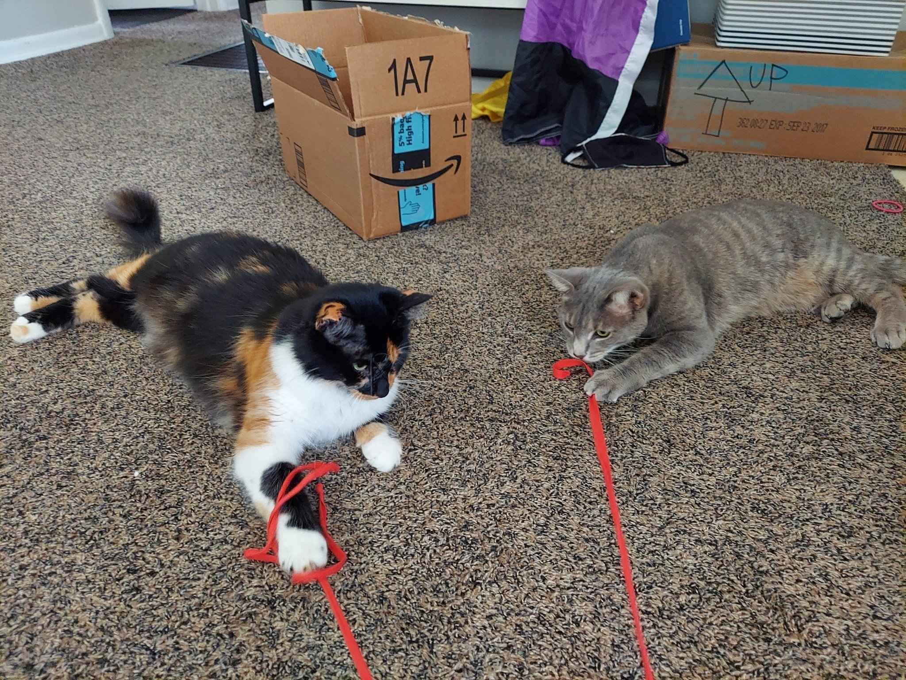
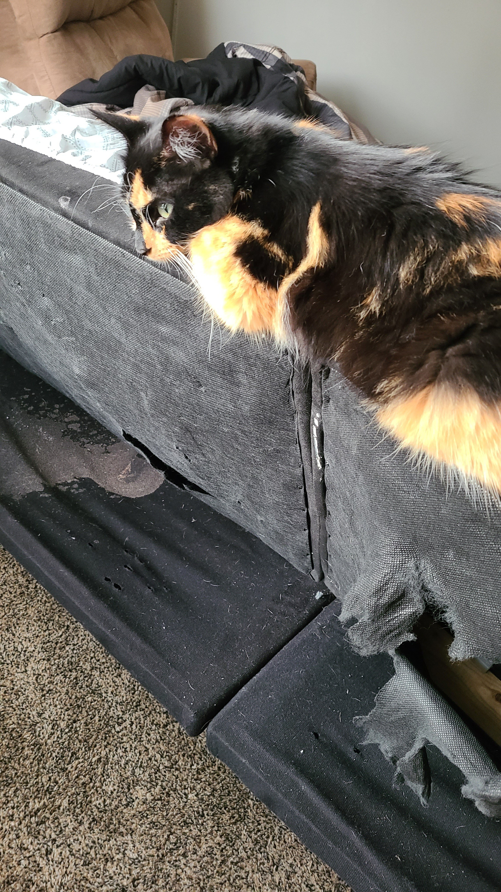
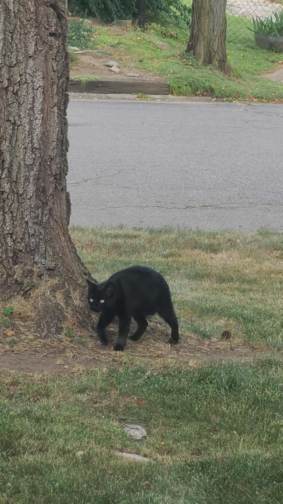
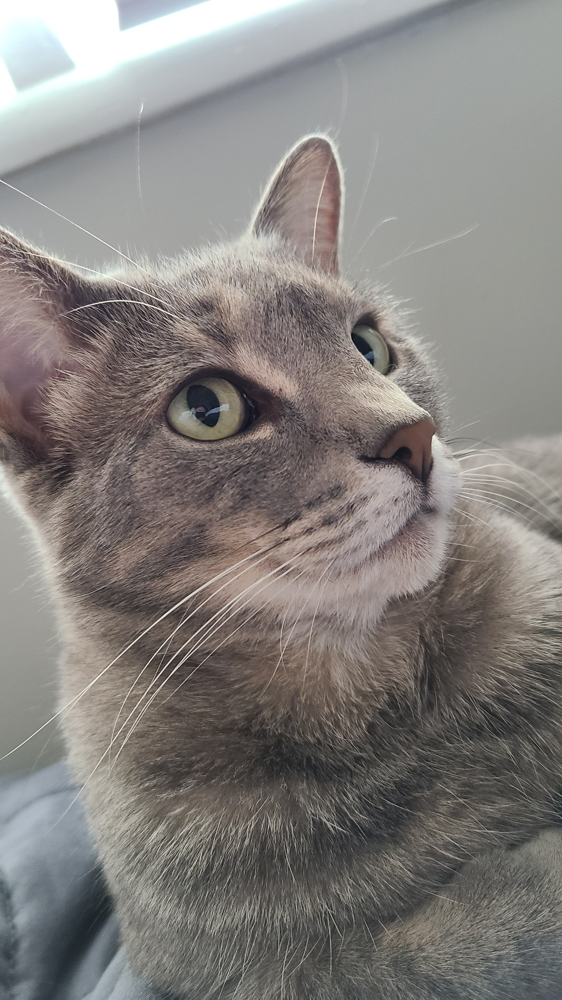

Charley and Truck, two cats, both alike in dignity...
Charley is a grey tabby. She's considerate and her feet make little patters when they hit the ground. She loooooooves to eat chicken pâté and human food
like cheese and water out of cups, when her humans don't push her puny little cat head away from the food quick enough.

Truck is a calico with a gorgeous long mane. She has one desire in life, and that is to use her favorite human (Jade) as a bed. When she can't use Jade as
a bed, she is thinking about how comfortable she would be if she could be using Jade as a bed, or scratching at Jade's door in hopes of getting on top of her (to us
e her as a bed). She eats sometimes, and when she does it she's messy about it for sure.
A quick layout description of the house...
Charley and Truck live in a house with lots of interesting nooks and crannies. There are lots of places to hide, and lots of tall objects to climb. There's
food and water and treats loaded with cat hallucinogenics. There are even windowsills to sit on, and dream about running thru the wilderness of Muncie, IN.
In Charley and Truck's house, they have a lot to stay for, but sometimes the mystery of what lies beyond the windowsill beckons their kitty hearts.

A normal day...
A normal day for Charley and Truck begins at 7 am, when Jade wakes up for a shower. This is when Truck decides it's time to cuddle. But oh no! Jade has quickly
entered the bathroom as part of her morning routine, shutting Truck out. Sometimes it's hard to be a cat with a big heart.
Charley sits in the room of her favorite person (Clay), taking the time to rest on her favorite plaid blanket. Her human is still fast asleep, but they will wake up
soon like usual. In the meantime, they can hear rustling in the room next door. Cas is waking up and getting ready to leave the house! This is exciting, because
Cas is so cool and awesome :). As Cas gets ready, Jade leaves the bathroom.
Or not...?
Jade lays back down after her shower, and Truck takes her chance to cuddle! They lay together for a long time, as other people in the house rustle around, getting
ready for their day. Eventually, the back door makes a loud creaking sound -- that means someone is leaving! Out of curiousity, Truck gets up to check it out.
Upon arriving at the back door, Truck runs into Charley. Charley is also looking at the door, which has been left slightly ajar.
"What is this?", she thinks, inspecting the light being let into the house thru the partially open door. She sniffs it -- smells like fresh autumn air and
rodents running around -- and licks it -- tastes like dust -- and listens to the sound of cars passing by the house. THIS is the great outdoors, the call of the wild.
This is her chance to explore!
With her little kitty feet, Truck walks past her food bowl and right thru the door. Charley follows close behind.
An exciting discovery...
Upon exiting the house, Truck and Charley take their chance to explore. First, they walk around the yard. There are plants everywhere! There's Queen Anne's Lace, tall and
swinging in the breeze. There's goldenrod, waiting for the right chance to bloom. There's freshly manicured grass all over the lawn of the house they just left.
Charley takes a bite out of the grass, and immediately spits it out. It was bitter and gross, not fun for a cat who loves to eat meat. As if sensing her disgust,
a squirrel skitters past. Charley immediately pounces but damn! It escapes her grasp and runs to safety. She's absolutely out of practice, she thinks, as she recalls
the short years she spend in the past living in this very type of wilderness. Memories of kittenhood and rodent bones between teeth drift back and forth in her
tiny brain, and she feels motivated to hunt for more food. She begins to canvass the area, looking for something slow or weak enough for her to catch.
Meanwhile, Truck has even less luck hunting, but the act of hunting is incredibly enriching despite that. She's having the time of her life! As she runs after a
small animal, she runs face first into a larger, more cat sized animal. Looking up, she sees a black cat with a red collar. This isn't any cat she's seen in her life
before. The cat glares, then turns to catch the prey that Truck was going after. Immediately, she's filled with jealousy in anger -- that was her catch! This cat's a
huge cheater! She chases after the black cat so she can show this cat what she thinks.

Marcie's hideout...
Marcie's lived by the train for as long as she can remember. She runs there, squirrel in mouth, avoiding those weird house cats. Surely, they'll be scared off by
the other strays living there, or the loud train, that they won't follow. As she runs there, she passes people jogging and crosses the river. Arriving at her
home, she sits in unmowed grass and begins to feast. This fresh catch tastes awesome today -- the food is always fresher in the neighborhoods, since there's less
competition there. She savors each bite, relaxing as she eats her brunch, until she hears a rustling. Suddenly alert, she glances around -- there's nothing to be
seen. It must be another stray living by the train tracks -- there are a few of those who live with Marcie but they wouldn't do the disservice of interrupting her
during a good meal. After minutes of listening and eating, she hears it again! This time, she stands up prowling as she inspects her surroundings. She looks behind
bushes and trees, checking for prey or something more concerning. Aha! She finds a pile of orange, black, and white. It's one of the house cats from earlier!
A new friend?...
Charley followed Truck to a strange new place, and they both ended up running into an unfamiliar cat. Feeling slightly uncomfortable, she hangs back and watches.
Truck is off in the distance, but close enough that Charley can see her. She's getting batted at by the unfamiliar cat! Charley decides not to intervene, but she
hears Truck hiss in response. This isn't a fight she cares much about getting into, but she'll watch her kitty comrade from afar. In the meantime, she explores the land around her.
There's a gravel path right by the field that truck and the mysterious black cat are fighting in, surrounded by foliage everywhere. She supposes this must be a popular
human gathering area, and she's quickly proven right by a group of joggers passing by. They stop, briefly, to look at the cats. They don't come near, but they coo when Charley
look their way. Charley also see some other cats, all of whom are extremely disaffected by both the fighting nearby and any humans who approach. They seem seasoned in the experience
of being watched but not interacted with. Charley can't relate -- her humans are way too touchy and pick her up too often. She supposes she could become an acquaintance to these cats,
since they seem to have a few things like that in common. Caught in a reverie about her surroundings, Charley doesn't look away from the other cats until she hears another hiss from the direction
of Truck. She decides to investigate.
